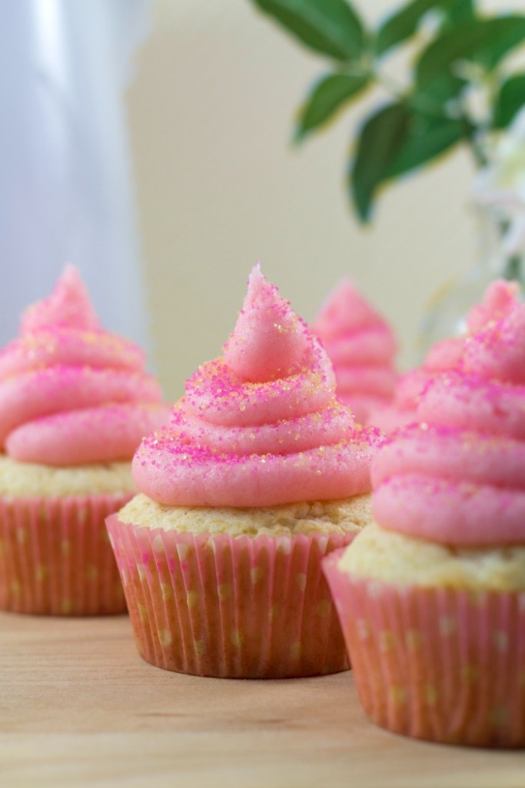

PRETTIER IN PINK LEMONADE CUPCAKES
My niece once asked me, “Why is pink lemonade pink? Are there pink lemons?” So it turns out the first pink lemonade happened by accident, sort of. There was a man named Pete Conklin who sold drink concessions at a circus, and he ran out of water with which to make his lemonade. So he ran to one of the performers’ tents and grabbed the water in which she’d just washed her tights…her pink tights. He labeled the beverage ‘fine strawberry lemonade’ and the crowd went wild. Also, how gross is that story? Don’t worry, there’s no tight water in our Pink Lemonade Cupcakes. We went with regular ol’ dye rather than laundry water. You’re welcome. Enjoy!
